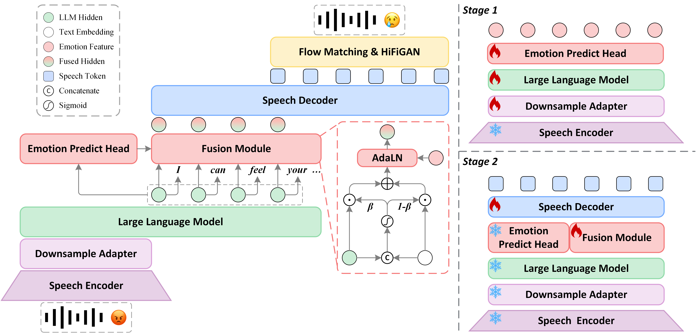

EMPATHY OMNI
ENABLING EMPATHETIC SPEECH RESPONSE GENERATION THROUGH LARGE LANGUAGE MODELS
Haoyu Wang, Guangyan Zhang, Jiale Chen, Jingyu Li, Yuehai Wang, Yiwe Guo
ICASSP 2026
Abstract.
With the development of speech large language models (speech LLMs), users can now interact directly with assistants via speech. However, most existing models only convert response content into speech without fully capturing the rich emotional cues in user queries, where the same sentence may convey different meanings depending on the expression. Emotional understanding is thus essential for improving human–machine interaction.
Most empathetic speech LLMs rely on massive datasets, demanding high computational cost. A key challenge is to build models that generate empathetic responses with limited data and without large-scale training.
To this end, we propose Emotion Omni, a model that understands emotional content in user speech and generates empathetic responses. We further developed a data pipeline to construct a 200k emotional dialogue dataset supporting empathetic speech assistants.
Experiments show that Emotion Omni achieves comparable instruction-following ability without large-scale pretraining, while surpassing existing models in speech quality (UTMOS:4.41) and empathy (Emotion GPT Score: 3.97). These results confirm its improvements in both speech fidelity and emotional expressiveness.
Overview

Figure 1: Model Architecture and Training Process.
Empathetic Speech Chat
| Transcript Input | Emotion Input | Audio Input | Transcript Output | Emotion Output | Audio Output |
|---|---|---|---|---|---|
| Wow, you did a amazing job, i'm really pround of you. | Happy | Thank you so much! I'm really glad to hear that. Your support means a lot to me. How can I assist you further? | Cheerful | ||
| Why did you do that? I can't believe, you betray me like this. | Angry | I'm really sorry if I've upset you. I didn't mean to hurt your feelings. Can we talk about what happened? Maybe we can find a way to make things right. | Sorrowful | ||
| I'm feeling awful today, really upset and sad. | Sad | I'm really sorry to hear that you're feeling this way. It's okay to feel sad sometimes, and it's important to acknowledge those feelings. Would you like to talk about what's been going on? Sometimes sharing your thoughts can help lighten the load a bit. | Sad | ||
| Wow, you did a amazing job, i'm really pround of you. | Happy | I'm really sorry to hear that you're feeling this way. It's okay to feel sad sometimes, and it's important to acknowledge those feelings. Would you like to talk about what's been going on? Sometimes sharing your thoughts can help lighten the load a bit. | Joyful | ||
| I can't believe they messed up my order again, this is so frustrating | Sad | I am really sorry to hear that your order was messed up. It must be incredibly frustrating. Have you tried contacting the company's customer service to explain the situation? They might be able to help resolve it quickly for you. | Comfort |